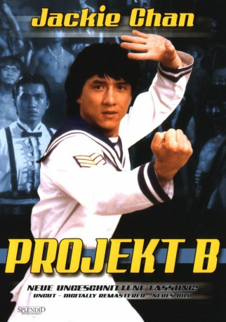

#3751 Projekt B
Alternativ: Project A 2 (Englischer Titel)
 
 IMDB-Wertung: 7.2 / 10
IMDB-Wertung: 7.2 / 10  Metascore: 0
Metascore: 0 
Mit seinem Sieg über die Piraten vor der Küste Hongkongs hat sich der junge Dragon (Jackie Chan) erste Lorbeeren verdient. Als es darum geht, die Korruption innerhalb Hongkongs Polizei zu bekämpfen und den Einfluß eines Verbrechersyndikats zu brechen, wird Dragon mit der Aufgabe betraut ...
Jahr: 1987
Dauer: 106 Minuten
FSK: 16
Land: Hong-Kong Studio: Highlight FilmTonspuren:
Untertitel: Deutsch,
Auflösung: 1080p (1920x808) Größe: 7485 MB
Genre: Action, Komödie, Krimi
Regisseur:  Jackie Chan
Jackie Chan
Drehbuch: Don McKellar
Soundtrack:
Darsteller:
 Jackie Chan als Sergeant Dragon Ma Yue Lung
Jackie Chan als Sergeant Dragon Ma Yue Lung- Maggie Cheung als Yesan
 Carina Lau als Beattie
Carina Lau als Beattie- Jessica Gee als Miss Pak
 Bob Joles als Major Jeeves / English Official #1 / Police Captain at Ball
Bob Joles als Major Jeeves / English Official #1 / Police Captain at Ball- Tom Konkle als
 Lex Lang als
Lex Lang als  Siu-Ming Lau als The Prince
Siu-Ming Lau als The Prince Audrey Wasilewski als
Audrey Wasilewski als  Ping Wu als Sergeant Dragon Ma Yue Lung
Ping Wu als Sergeant Dragon Ma Yue Lung Rosamund Kwan als Miss Pak
Rosamund Kwan als Miss Pak- David Lam als Superintendant Chun
 Bill Tung als Police Commissioner
Bill Tung als Police Commissioner- Sam Lui als Mr. Man
- Regina Kent als Regina, Governor's Daughter
- Yao Lin Chen als Awesome Wolf
- Kenny Ho als Shi King
 Mars als Jaws
Mars als Jaws- Kin-sang Lee als Mao's Sidekick No 2
 Ben Lam als Brawns
Ben Lam als Brawns- John Cheung als Bodyguard No 1
- Mickey als Cobra
- Ti-Ko Chen als Python
- Keung-Kuen Lai als Pirate No 1
- Rocky Lai als Pirate No 2
- Sing Kwong Lai als Pirate No 5
- Sun Wong als Sgt. Ching
- Fat Wan als Wan Sam Mun
- Billy Sau Yat Ching als Yenkit
- Kwok Wai Lo als Policeman
- Wen-Wei Lin als Sung
- Kenny Bee als Cop
- Tony Wong als
- Ricky Hui als Homely Cop
- Kwok-Leung Ngan als
- Clarence Yiu-leung Fok als
- Abdullah Chai als
- Isabella Wong als Pearl
- Fung Woo als
- Kwok Hung Lam als
- Kwan-Min Cheng als
 Wellson Chin als
Wellson Chin als - Hoson Chan als
- Tin Sang Lung als
- Yuen Ling Tao als
- Wai-Leung Bau als
- Lai Bik Kwong als
 Anthony Chan als Cop
Anthony Chan als Cop- Kwok Kuen Chan als Big Whale
- Sai-Tang Chan als
Datei: X:\HD-Eastern-Collections\Jackie Chan\Projekt B (1987, FSK16, 1920x808).mkv seit 31.05.2016
Festplatte: HD Eastern+Western
 Es gibt insgesamt 58 Filme in der Gruppe 'HD-Eastern-Collections\Jackie Chan'
Es gibt insgesamt 58 Filme in der Gruppe 'HD-Eastern-Collections\Jackie Chan'